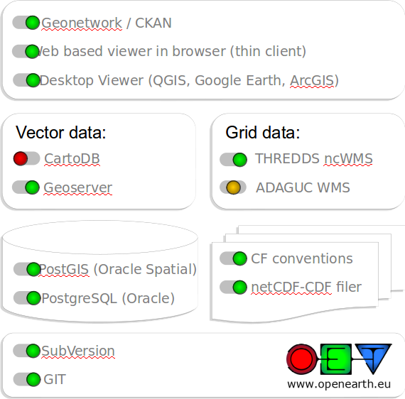

OpenEarth
@ Understanding Risk 2014
OpenEarth
Fedor Baart

What is OpenEarth?
- Data
- Models
- Tools
Community

Dutch Open Data Award


Van Oord

3TU

Deltares
Infrastructure for Data, Models and Tools

Stack
Data


Raw data

Raw + Script = data


Subversion
- Raw data: 5800 commits
Model coupling
- Offline
- Online
- Interactive
- Model as a Service
Offline model coupling
FEWS
FEWS
false
Astronomical
true
GridToCatchments_Forecast
true
Singapore_Sobek_Forecast
Online model coupling
Two way, dynamic, integrated, data exchange at timestep level, memory based.
Model coupling frameworks
Variations:
- Framework
- Tools
- API
- Supported languages
- Invasiviness
- HPC support
- Coupling pattern
- Configuration GUI/Code/Files
Common API
- Initialize
- Run
- Finalize
OpenMI
- Framework: takes over timeloop
- Tools: no separate tools
- C#/Java
- Invasive
- Local
- Publish/Subscribe
- XML configuration
Goal: Windows based/configurable coupling
// --- Populate input exchange item for flow into the whole river ---
EngineInputItem wholeRiverFlowInputItem = CreateInputInflowToRiver(flowQuantity, fullRiverElementSet);
wholeRiverFlowInputItem.TimeSet.SetTimeHorizon(timeHorizon);
EngineInputItems.Add(wholeRiverFlowInputItem);
// --- Populate input exchange item for ground water level of the whole river ---
EngineDInputItem gwLevelInputItem = CreateInputGwLevel(levelQuantity, fullRiverElementSet);
gwLevelInputItem.TimeSet.SetTimeHorizon(timeHorizon);
EngineInputItems.Add(gwLevelInputItem);
// --- Populate output exchange items for flow in river branches, id based ---
for (int i = 0; i < _numberOfNodes - 1; i++)
{
string id = "Branch:" + i;
ElementSet elementSet = new ElementSet(id, id, ElementType.IdBased);
elementSet.AddElement(new Element(id));
EngineOutputItem outputExchangeItem = CreateOutputFlowInBranch(i, id, flowQuantity, elementSet);
EngineOutputItems.Add(outputExchangeItem);
}
OGC standardization
Implemented in
- SWAN
- SOBEK
- Delft3D
Goal: unstructured/structured on cluster

ESMF
- Framework: takes over timeloop and interpolation
- Tools: command line tool for regridding, supports UGRID
- C/Fortran
- 1 fortran module per model
- MPI
- Push
- Code configuration
SWAN Component
call ESMF_ClockGet(clock, currSimTime=timeinterval, rc=rc)
call ESMF_TimeIntervalGet(timeinterval, s_r8=esmft, rc=rc)
! Get the timestep from esmf, the coupled timestep
call ESMF_ClockGet(clock, timestep=timeinterval, rc=rc)
call ESMF_TimeIntervalGet(timeinterval, s_r8=esmfstep, rc=rc)
! Run until we reach esmfnext
esmfnext = (esmft+esmfstep)
! Assume swan runs all the way up to esmfnext....
call update(esmfstep)
Configuration in code
swancomp = ESMF_GridCompCreate(name="swan model", rc=rc)
dflowfmcomp = ESMF_GridCompCreate(name="dflowfm model", rc=rc)
swanfmcpl = ESMF_CplCompCreate(name="swan-fm coupler", rc=rc)
swanimp = ESMF_StateCreate(name="swan import", stateintent=ESMF_STATEINTENT_IMPORT, rc=rc)
swanexp = ESMF_StateCreate(name="swan export", stateintent=ESMF_STATEINTENT_EXPORT, rc=rc)
dflowfmimp = ESMF_StateCreate(name="dflowfm import", stateintent=ESMF_STATEINTENT_IMPORT, rc=rc)
dflowfmexp = ESMF_StateCreate(name="dflowfm export", stateintent=ESMF_STATEINTENT_EXPORT, rc=rc)
Regridding
if (trim(name) .eq. 'dflowfm export') then
call ESMF_FieldRegridStore(fromfield, tofield, &
unmappedaction=ESMF_UNMAPPEDACTION_IGNORE, &
routehandle=fromfm_rh, rc=rc)
else if(trim(name) .eq. 'swan export') then
call ESMF_FieldRegridStore(fromfield, tofield, &
unmappedaction=ESMF_UNMAPPEDACTION_IGNORE, &
routehandle=fromswan_rh, weights=weights, indices=indices, rc=rc)
end if
Implemented in
- XBeach
- Dune
- SWAN
- DFlowFM
Goal: interactive modelling
Basic Model Interface (BMI)
- No framework, interface only
- No tools
- No coupling
- C interface
- Not very invasive
- Library level
- Getter/Setter
Hollywood
# create a new model
model = BMI(engine="subgrid")
# intialize the model
model.initalize("input.ini")
# run a timestep
model.update(dt)
# cleanup
model.finalize()
Introspection
# get variables from a running model
var = model.get_var("waterlevel")
# set variables into a running model
model.set_var("waterlevel", array)
3Di
with BMIWrapper(engine="subgrid", config="1dpumps") as subgrid:
while True:
df = subgrid.get_nd('pumps')
rc.publish(channel, type="pumps", msg=df.to_json())
Implemented in
- XBeach
- SWAN
- DFlowFM
- Subgrid
- Delta Shell
Online coupling examples
- Library interface: BMI
- Java/C#: OpenMI
- Parallel coupling: ESMF
Coupling of coupling frameworks
Main difficulties in coupling
Not invented here
Languages
Hollywood principle
Model as a service
- NetCDF memory
- Web Processing Services
- Model Message Interface
Goal: transparent opendap coupling
NetCDF shared memory
- No framework
- NetCDF library
- C/Fortran/Python
- Not invasive, 1 flag
- Shared memory
- Code
Shared memory
lib = ctypes.CDLL("libmodel.so")
lib.initialize()
ds = netCDF4.Dataset("diskless.nc",
diskless=True,
persist=False)
ds.createVariable("rain", datatype="double", dimensions=("angle", "distance"))
ierr = nf90_open("diskless.nc", mode=NF90_DISKLESS, ncid=ncid)
ierr = nf90_get_var(ncid, 1, data)
Goal: expose models as a webservice
Web Processing Service
http://dtvirt5.deltares.nl/wps?
request=Execute&
identifier=tidal_predict&
service=wps&
version=1.0.0&
datainputs=location=LINESTRING(2%2052,3%2053);startdate=2020-01-01;enddate=2020-01-02&
responsedocument=tide=@mimetype=text/csv
WPS response
class Process(WPSProcess):
def __init__(self):
WPSProcess.__init__(self,
identifier = "tidal_predict",
title="Tidal prediction tool")
self.addComplexInput(identifier = "location",
title = "Input vector (point, linestring) in format geojson, well known text or gml",
formats = [
{'mimeType': 'text/plain', 'encoding': 'UTF-8'},
{'mimeType': 'application/xml', 'schema': 'http://schemas.opengis.net/gml/2.1.2/feature.xsd', 'encoding': 'UTF-8'},
{'mimeType': 'application/json'}
])
...
self.addComplexOutput(identifier = "tide",
title = "Calculated water level for requested locations and date",
formats = [
{"mimeType": "text/csv"},
{"mimeType": "application/json"}
])
# Execution part of the process
def execute(self):
startdate = dateutil.parser.parse(self.startdate.getValue())
enddate = dateutil.parser.parse(self.enddate.getValue())
freq = self.frequency.getValue()
dates = dateutil.rrule.rrule(rrules_freqs[freq], dtstart=startdate, until=enddate)[:]
location = self.location.getValue()
geom = pywps.utils.decode(location)
points = np.atleast_2d(np.asarray(geom))
df = openearthtools.tide.predict(points, dates=dates)
self.setValue(df.to_json(f, orient='records'))
Goal: Push model results to a browser

Model Messages Interface
{
'shape': [30000,2],
'dtype': 'float64',
'standard_name': 'sea_surface_altitude',
'units': 'm'
}
\x03\x02\x06\xb3\x03\x02\x06\xb3\x03\x02\x06\xb3\x03\x02\x06\xb3\x03\x02\x06\xb3\x03\x02\x06\xb3
- Model browser interactivity: Model Message Interface
- Models as a Service: WPS
Toolbox


Interesting tools


Subversions + Github
- Tools: 11000 commits
Finding data


Infrastructure for Data, Models and Tools